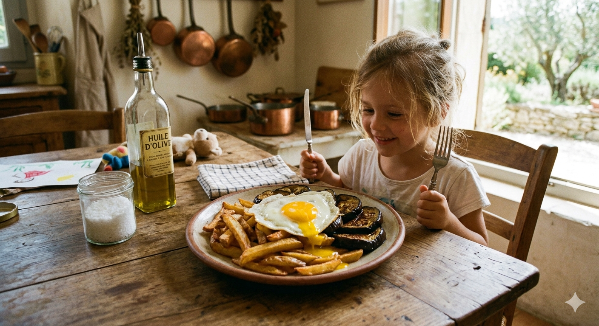

"Bon, ce n'est pas très Méditerranéen, c'est même un peu Belge avec ces frites, mais c'était le plat préféré de ma fille !"

1. Les Aubergines : Épluchez les aubergine. Coupez-les en rondelles ou en longueur. Faites-les dorer à la poêle dans une bonne huile d'olive. Elles doivent être confites, presque fondantes à cœur.
2. Les Frites (La méthode Belge) : Épluchez et coupez les Bintjes à la main.
• Première cuisson : plongez-les dans le blanc de boeuf ou dans de l'huile à environ 150°C pendant 4/5 minutes. Elles doivent cuire sans colorer. Sortez-les et laissez-les reposer.
• Deuxième cuisson : Juste avant de servir, plongez-les dans la friteuse (180°C) pour qu'elles deviennent bien dorées et croustillantes.
3. L'Œuf au plat : Dans la même poêle ou vous avez fait cuire les aubergines, faites cuire votre œuf au plat. Le blanc doit être pris, mais le jaune doit rester bien liquide pour napper les légumes.
4. Le service : Dressez les frites et les aubergines, posez l'œuf par-dessus. Salez à la fleur de sel et poivrez.